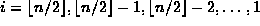
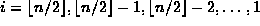
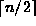
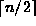

Data Structures and Algorithms
with Object-Oriented Design Patterns in Java
Data Structures and Algorithms
with Object-Oriented Design Patterns in Java
The buildHeap method shown in Program  transforms an unsorted array into a max heap.
It does so by calling the percolateDown method
for .
transforms an unsorted array into a max heap.
It does so by calling the percolateDown method
for .
Program: HeapSorter class buildHeap method.
Why does buildHeap start percolating at  ?
A complete binary tree with n nodes
has exactly  leaves.
Therefore, the last node in the array which has a child
is in position
?
A complete binary tree with n nodes
has exactly  leaves.
Therefore, the last node in the array which has a child
is in position  .
Consequently, the buildHeap method starts doing percolate down
operations from that point.
.
Consequently, the buildHeap method starts doing percolate down
operations from that point.
The buildHeap visits the array elements in reverse order.
In effect the algorithm starts at the deepest node that has a child
and works toward the root of the tree.
Each array position visited is the root of a subtree.
As each such subtree is visited,
it is transformed into a max heap.
Figure illustrates how the buildHeap method
heapifies an array that is initially unsorted.
 Copyright © 1998 by Bruno R. Preiss, P.Eng. All rights reserved.
Copyright © 1998 by Bruno R. Preiss, P.Eng. All rights reserved.